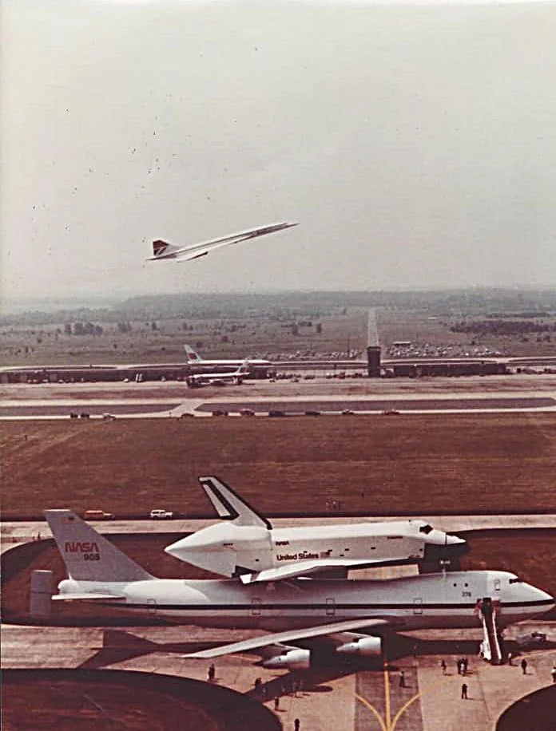

lishtash
O que tem que ter no bolso
- Celular
- Carteira
- Educard
- Fone
como preparar meu lanche favorito
- pegue uma tortilha
- 30s cada lado na frigideira a fogo baixo
- Desfie uma quantidade de frango(a gosto)
- Coloque uma quantidade a gosto de bacon para fritar na frigideira, e após aprox. 1:30min, coloque o frango para fritar junto e fique mexendo,
- (OPCIONAL)Coloque uma colher de chá de mlho catupiry ou cheddar, e mexa.
- Quando o frango dourar, retire do fogo e coloque o resultado na tortilha preparada.
- Enrole a tortilha e pronto!
Reddit: Dive Into Anything
github.com
- Filme Favorito: Interestelar
- Série Favorita: Mayday! Desastres Aéreos
- a série é uma série investigativa,sobre aviação. Combina duas coisas que eu gosto. Além de agregar conhecimento em aviação pra mim.
- Menção Honrosa: De Volta para o Futuro
- o que me fez estudar ciência, relatividade e astronomia em primeiro lugar.
top 5 bandas favoritas
- Linkin Park, música favorita: Faint(Escute Aqui)
- System of a Down, música favorita: Toxicity(Escute aqui)
- Guns 'n Roses, música favorita: November Rain(Escute Aqui)
- Metallica, música favorita: Enter Sandman(Escute Aqui)
- Thirty Seconds to Mars, música favorita: Edge of the Earth(Escute Aqui)

Os três ícones do céu.